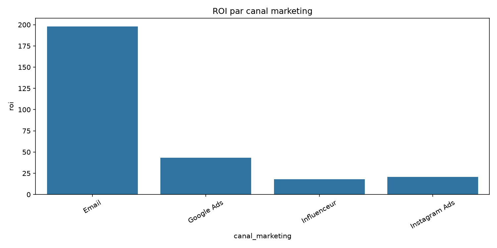
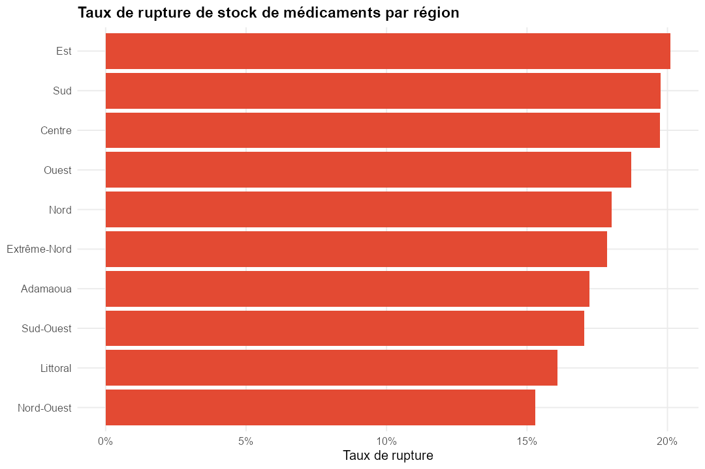

Data Analyst en devenir
Formation Excel · Power BI · SQL · Python · R · Claude Code — appliquée à des projets d'analyse complets, de la donnée brute à la recommandation business.
Objectif professionnel
Évoluer en interne, chez mon employeur actuel, vers un poste orienté data appliqué à mon secteur d'activité (électrotechnique / recherche), en restant en local, avec pour objectif d'obtenir une reconnaissance salariale à la hauteur de ce nouveau périmètre de responsabilités d'ici 12 mois.
Compétences techniques
Projets réalisés
1. AfriMarket — Analyse e-commerce
Python · pandas · StreamlitPipeline de nettoyage, analyse exploratoire et dashboard interactif pour un e-commerce panafricain : performance commerciale, segmentation client, ROI marketing.

Disponible en direct pendant la démo (dashboard exécuté localement par la présentatrice/le présentateur).
2. DataLendo — Analyse RH
SQL · SQLiteAnalyse des effectifs, de la performance et du turnover à partir de 4 tables sources, avec 15 requêtes business réellement exécutées.
3. Santé Publique Cameroun
R · tidyverse · ShinyWorkflow complet d'analyse en R (import → nettoyage → transformation → analyse business → dashboard Shiny) sur 10 300 consultations dans des centres de santé.

Disponible en direct pendant la démo (dashboard exécuté localement par la présentatrice/le présentateur).
Contact
Retrouvez tous les projets sur GitHub.